歡迎來到 PHP雲端ERP 的世界
PHP 是開發 雲端ERP 應用程式的工具組。提供簡易的介面和邏輯結構來使用豐富的函式庫，其目的是讓你加 快開發速度。使用 PHP 只需要寫少少的程式，創造力可專注在專案開發。
雲端ERP 使用手冊目錄
貳、基本資料建立
一、管理維護管理系統
1.使用權限設定
■程式代號：ADMI05
■輸入畫面：
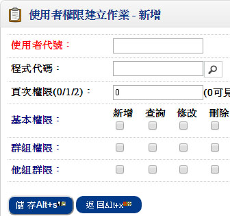 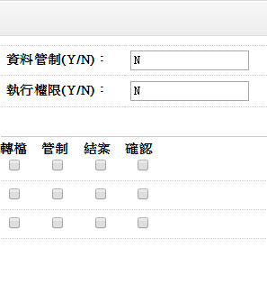- ■注意事項：
- 在系統運作之前，應該先行計劃公司內有那些人員或那些部門單位需要直接使用電腦執行本系統。
- 確定後，必須對於每一需要使用之人員或部門單位賦予一唯一之『使用者代碼』，然後利用「管理維護系統」中之『登錄者代號建立作業』、『群組資料建立作業』及『使用者權限建立作業』一一加以輸入。
- 對於所輸入之各使用者，應該對其在公司內之職掌予以明確界定，然後對於每一使用者逐一檢討其對於每一項作業之使用權限。
二、基本資料管理系統
1.公司資料建立作業
■程式代號：CMSI14
■作業目的:系統所提供之各種報表，其表頭皆可印出公司名稱，此公司名稱乃於「基本資料管理系統」中之『公司資料建立作業』中所設定者。故可於系統使用之前執行公司名稱設定，否則所列印之報表表頭將不會印出公司名稱。
■輸入畫面：
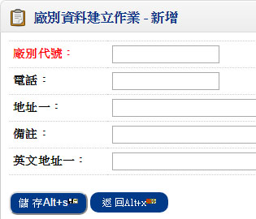 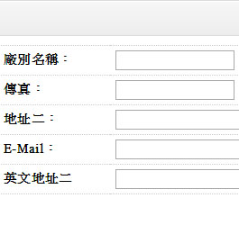- ■注意事項：
- 若在本系統之前，電腦已安裝有本系列軟體中之其他系統，且已執行過『公司資料建立作業』，則本系統可以不必重複設定，直接沿用即可。
2.廠別資料建立
■程式代號：CMSI02
■作業目的:
- 廠別資料為庫存，或商品異動相關報表資料的篩選條件
- 為配合全球ERP的管理，如果你只有單一製造廠管理，亦請您設定一個廠別代號來標示，在本系統的銷貨及採購系統的異動單據（銷貨單、銷退單、進貨單、退貨單…等）輸入時必須指定廠別
■輸入畫面：
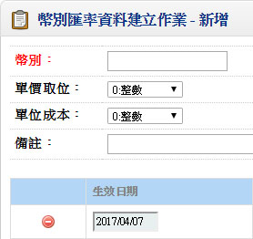 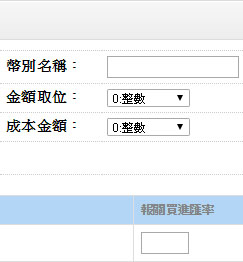- ■注意事項：
- 本系統可以支援多廠別帳款及付款的管理。
3.幣別匯率資料建立
■程式代號：CMSI06
■作業目的:對作外幣交易時，每天之銀行買進賣出匯率需先行建立，至於海關買進賣出匯率可期間整批產生。單價；金額；單位成本及成本金額可依不同幣別設定不同取位。
■輸入畫面：
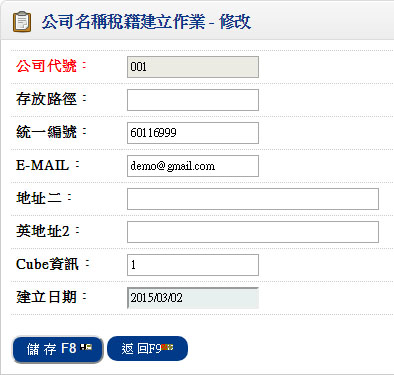 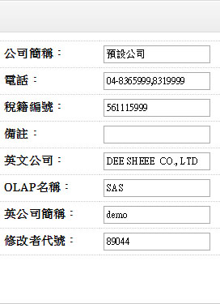- ■注意事項：
- 本國幣別亦應設定其幣別，而其匯率則固定為１
4.註記/簽核資料建立作業
■程式代號：CMSI17
■作業目的:對常用之註記及簽核可先行建立,可於列印憑證或報表取用。
■輸入畫面：
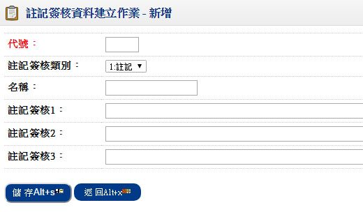- ■注意事項：
- 對於系統所提供的憑證或報表列印，是可由使用者自訂其簽核程序（經理核准、主任核准、製表）及憑證報表表尾的註記
- 請先將常用的註記及簽核格式編碼於本作業建檔
三、應付管理系統
1.供應廠商資料建立作業(採購管理系統)
■程式代號：PURI01
■輸入畫面：
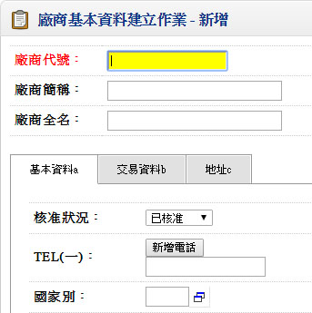 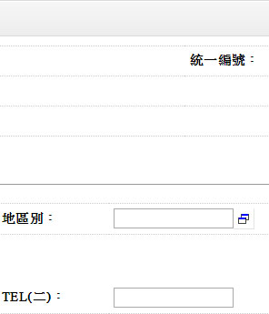▼
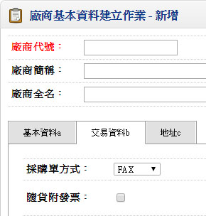 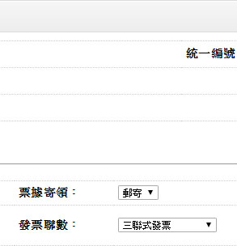▼
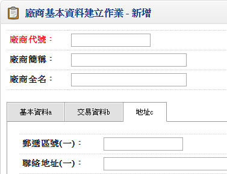- ■作業注意事項：
- 建立本資料前,必須將以下資料先行建檔完成:
編碼原則設定:基本資料管理系統->3.廠商編碼
採購人員資料:基本資料管理系統->職務類別建立->採購
交易對象建立作業:基本資料管理系統
幣別匯率建立作業:基本資料管理系統 - 採購供應廠商,託外加工廠商,固定資產供應商,一般文具雜項購置供應商,海運公司,空運公司,報關行,驗貨公司均由此建立,最好於編號的第一碼印能分辨
- 進行廠商評該時若廠商間有比較之需求者,編號應屬同一區間
- 對於供應廠商有不同之應付帳款整帳日期者,其編號須於同一區間
- 同一廠商有採購應付及託外應付帳款者,基於帳務管理原則可編成兩個號碼
- ■欄位說明：
- 廠商代號
- 可依「自動編碼開窗作業」預設廠商代號。請於基本資料管理系統->建立作業->編碼原則設定->廠商編碼先行定義
- 核准狀況
- 已核准者可登入採購,進貨單據
- 尚待核准者可登入採購,進貨等單據但show警告訊息
- 尚待核准者可登入採購,進貨等單據但show警告訊息
- 允許分批交貨
- 若不允許分批交貨,表示採購單只能進貨一次,進貨數量若未達採購數量,該張採購單即指定結案
- 最近交易
- 由進貨單回寫
- 付款方式
- 註記欄位.計1.現金,2.電匯,3.支票,4.其他四種
- 預設支票
- 付款條件
- 可空白,註記欄位
- 新增時預設初值為付款條件=付款條件名稱
- 價格條件
- 可空白,註記欄位
- 匯款銀行
- 若共用參數設定之功能別設定為「1.台灣版」時,若付款方式不為「2」, 則不允許輸入或修改
- 若共用參數設定之功能別設定為「2.大陸版」時,付款方式不判斷,均可輸入或修改
- 銀行名稱
- 顯示欄位
- 應付帳款科目
- 廠商應付帳款的科目代號，此科目不得為統制帳戶，一般應付帳款如果區分到廠商別，則應於本欄位明訂，如果只有一個彙總科目，則無須輸入
- 本欄位為自動分錄系統需求資料
- 結帳日期
- 驗收後X個月逢X日
指收料驗收後何時結帳認定應收帳款 - 若固定月底結帳,日期設31日
- 單價超限率
- 此為預留欄位
- 若「單價管制」為 Y 才可輸入
- 輸入採購單時,輸入之單價不可>原DEFAULT單價*(1+單價超限率,若大於則會show "此廠商須核對單價,故單價不可大於單價超限率!
- ABC 等級
- 可自行設定或透過採購系統”廠商ABC分析表”更新
- 交貨評等
- 可自行設定或透過採購系統”廠商交貨/品質評等”更新
- 品質評等
- 可自行設定或透過採購系統”廠商交貨/品質評等”更新
- 付款日期
- 隱藏欄位,不顯示
- 票期
- 隱藏欄位,不顯示
2.單據性質設定作業
■程式代號：ACPI01
■作業目的：
- 凡於應付系統所使用的單據如應付憑單、預付款單、付款單等，必須先於本作業編設單據代碼及相關基礎資料，以方便日後異動單據輸入。
- 作業一經設定請勿隨意修改，必須修改時，請保持在單一使用者狀況修改，單據性質將影響帳款的統計，千萬不得造成單據不同時區，所代表的性質不同。
■輸入畫面：
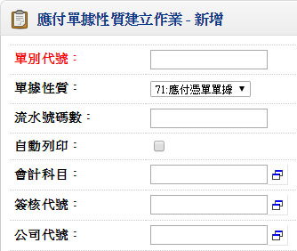
- ■作業注意事項：
- 關於單別設計上是可以區別帳款性質來識別，如果帳款繁多，但是從單別能區分出使用性質。
- 設計單據性質時如果同時要上自動分錄系統則單據設定同時就要能將應收帳款科目定義，避免單別的考慮不完全。
- ■欄位說明：
- 單據性質
- 一般應付憑單、溢付應付憑單、付款單、預付結帳單、預付待抵單據五種
- 一般應付憑單指進貨、加工、自行輸入，為應付帳款之加項
- 溢付應付憑單指由付款單輸入溢付款項而產生單據號碼之應付憑單，此性質之應付憑單會預設自動確認＝‘Y’，為應付帳款之減項
- 預付結帳單指採購單上支付部分訂金時，輸入預付結帳單而產生單據號碼之預付待抵單
- 編碼方式
- 1.日編、2.月編、3.流水號、4.手動編號
- 屬於「付款單建立作業」系統自動產生的預付應付憑單，編碼方式不得為『4.手動編號』
- 年碼數
- 編碼方式為日編或月編才需輸入，其餘不可輸入
- 日編或月編:年碼數須大於0
- 日編:年碼數＋4(4碼表MMDD)＋流水號碼數，不可大於11碼
- 月編:年碼數＋2(2碼表MM)＋流水號碼數，不可大於11碼
- 自動確認
- 單據輸入完成（如應付憑單）是否馬上核准（更新相關單據之結帳碼），如果公司的打單與簽核為分工權責者，那就非為自動確認
- 自動列印
- 單據輸入完成是否馬上將該憑證列印出來
- 單別限定使用者
- 單據輸入時設定該單據是否僅允許某此些使用者輸入
- 會計科目
- 設您設了一種單據為貨款應付憑單，專司原物料進貨退貨的帳款整理，則應付貨款就是會計科目
- 本欄位為「自動分錄系統」用
- 預付待抵單別
- 若單據性質為’74’之預付結帳單才允許輸入